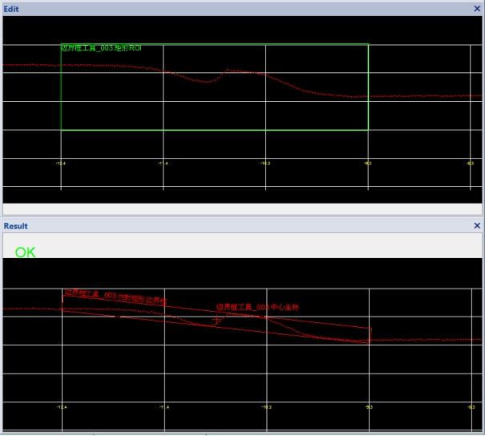
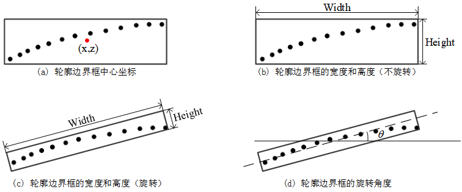

获取轮廓数据的边界框信息，图1所示为轮廓边界框工具的效果图。

| 分类 | 参数名称 | 参数描述 |
|---|---|---|
| 属性窗口 | 定位跟随 | 选“是”，可以链接二维线性变换，ROI区域随二维线性变换变化。 |
| ROI类型 | 分为3种，整幅图像、矩形ROI和仿射矩形ROI。 | |
| 边界框是否旋转 | 分为2种，旋转和不旋转。旋转检测的是主轴最小外接矩形，不旋转检测的是坐标最小外接矩形。 | |
| 图像窗口 | 轮廓图像 | 显示待检测的轮廓图像。 |
| 检测区域 | 在图像上显示待检测区域。 | |
| 数据链 | 输入轮廓数据 | 输入待检测的轮廓数据，该参数来源于截面生成工具。 |
| 二维线性变换 | 目标相对于模板的平移、旋转、缩放变换。 | |
| 高级界面 | 无 | 无 |
| 分类 | 参数名称 | 参数描述 |
|---|---|---|
| 监视窗口 | 输入轮廓数据 | 输入的轮廓数据，包括轮廓点数，有效点数。 |
| 中心X坐标 | 检测结果边界框中心的X坐标。 | |
| 中心Z坐标 | 检测结果边界框中心的Z坐标。 | |
| 宽度 | 检测结果边界框的宽度。 | |
| 高度 | 检测结果边界框的高度。 | |
| 旋转角度 | 检测结果边界框的旋转角度。 | |
| 执行结果 | 工具执行结果。 | |
| 执行时间 | 工具执行时间。 | |
| 图像窗口 | 输入轮廓数据 | 显示检测的轮廓图像。 |
| 边界框 | 显示检测结果边界框，包括边界框及其中心。 | |
| 数据链 | 同监视窗口参数，供后续工具使用。 |
Step 1 设置检测区域和旋转类型
为了获取轮廓数据的边界框信息，需要设置检测区域和边界框旋转类型。其中，检测区域有3种：整幅图像、矩形、仿射矩形，而旋转类型有2种：旋转和不旋转。
Step 2 执行测量和输出结果
在完成检测区域，边界框的旋转类型的设置后，就可以执行测量了。输出的结果包括：边界框的中心坐标，边界框的边长信息以及边界框的旋转角度。边界框的相关信息如图2所示。

其中，
中心坐标：检测区域内轮廓数据边界框的中心点坐标 (x,z)，如图2(a)所示。
宽度：检测区域内轮廓数据边界框的宽度。如图2(b)所示，当不启用旋转功能时，边界框为侧边平行于X轴和Z轴的最小矩形，宽度为X轴方向上的尺寸。如图2©所示，当启用旋转功能时，宽度为旋转后边界框与X轴夹角绝对值小于等于45°的侧边的尺寸。
高度：检测区域内轮廓数据边界框的高度。如图2(b)所示，当不启用旋转功能时，边界框为侧边平行于X轴和Z轴的最小矩形，高度为Z轴方向上的尺寸。如图2©所示，当启用旋转功能时，高度为旋转后边界框与X轴夹角绝对值大于45°的侧边的尺寸。
旋转角度：当不启用旋转功能，旋转角度始终为90°；当启用旋转功能时，如图2(d)所示，旋转角度为边界框长边与X轴的夹角θ。
无
参见“\Samples\3D\深度图\3D测量工具.gvp”。